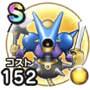

キラーマシン2
キラーゾーンこころ最大コスト+4スキルの斬撃・体技ダメージ+12%【片手剣・ヤリ】スキルの斬撃ダメージ+3%【ツメ・ムチ】スキルの体技ダメージ+3%【オノ・短剣】会心率+2%ギラ属性耐性+10%呪い耐性+10% / 9.0点
くわしい特徴
【ランク特殊効果】 こころ最大コスト+4スキルの斬撃・体技ダメージ+12%【片手剣・ヤリ】スキルの斬撃ダメージ+3%【ツメ・ムチ】スキルの体技ダメージ+3%【オノ・短剣】会心率+2%ギラ属性耐性+10%呪い耐性+10%